Презентация
Глушенок А. А.
Российский университет дружбы народов, Москва, Россия
N сентября 2026
Приобретение практических навыков по установке и конфигурированию SMTP-сервера.
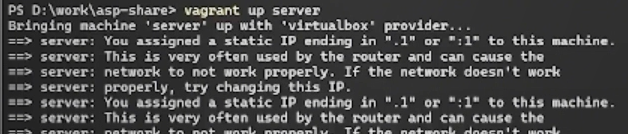
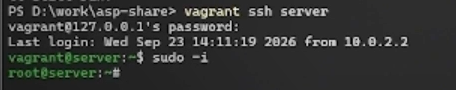
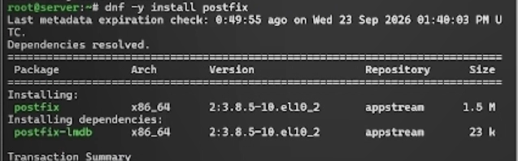
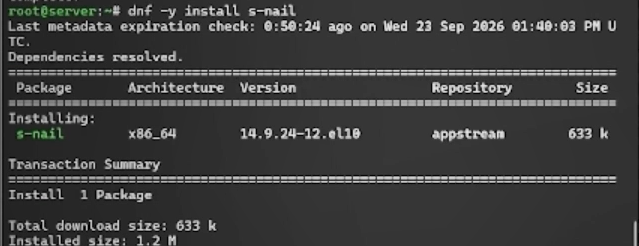
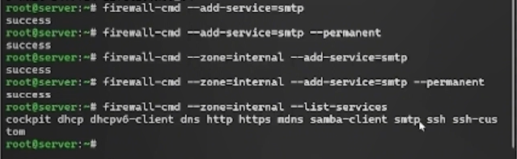
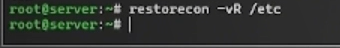
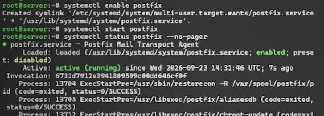
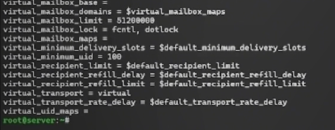
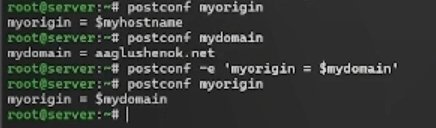
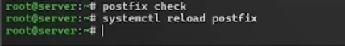
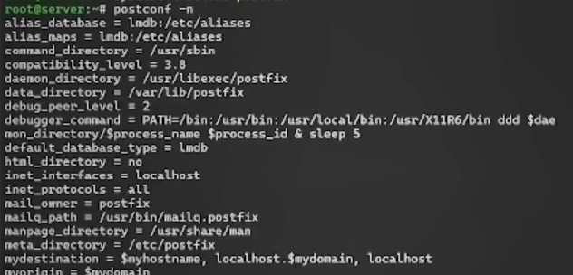
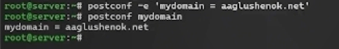
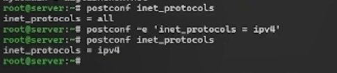
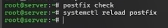
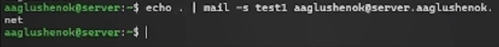
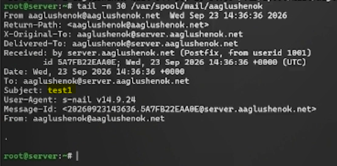
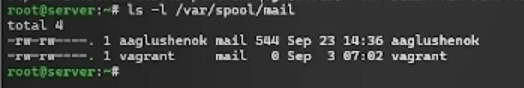
Из информации мониторинга видим, что сообщение с темой test1 доставлено. Из содержания каталога mail видим, что каталог с именем пользователя появился.
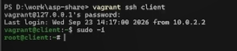
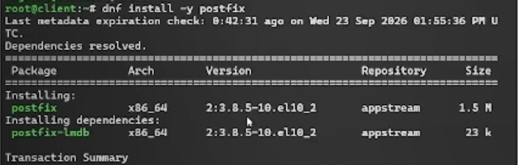
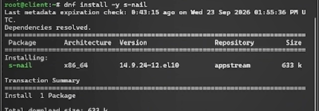
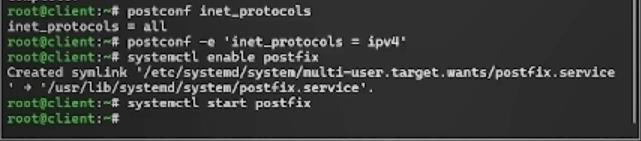
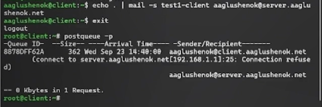
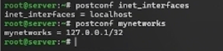
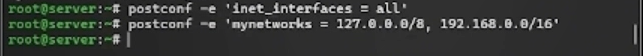
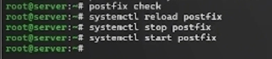
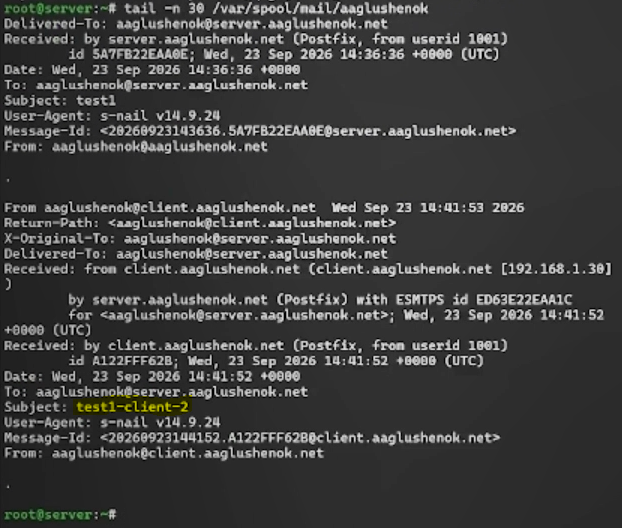
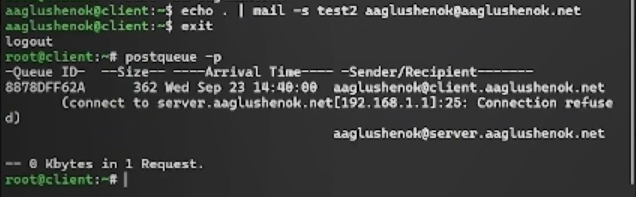
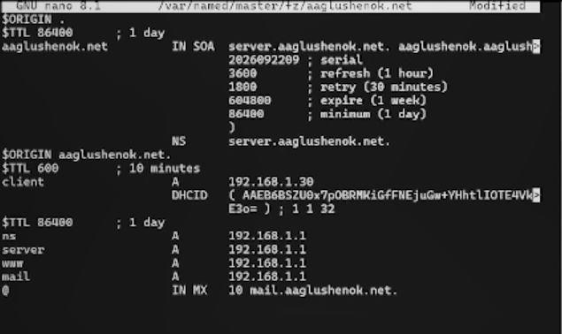
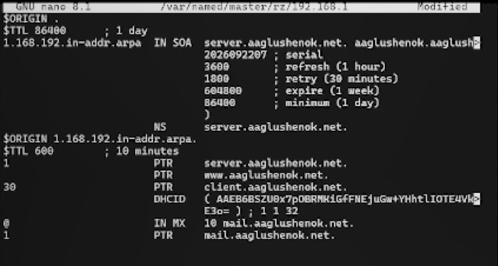
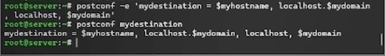
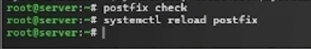
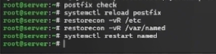
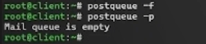
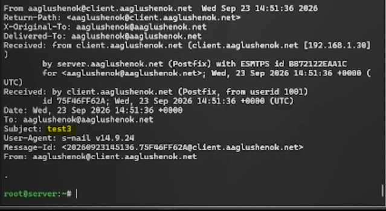
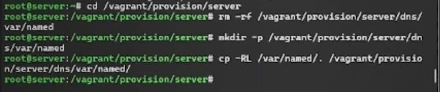
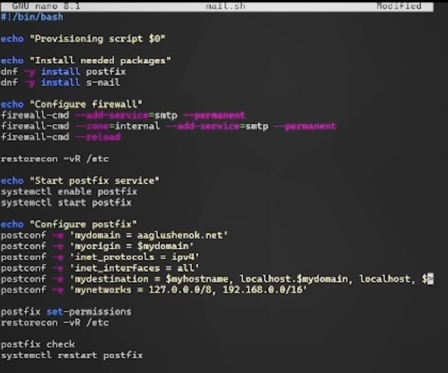
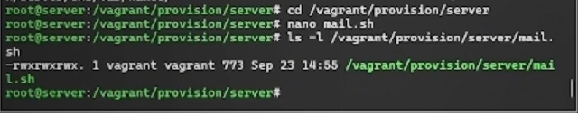
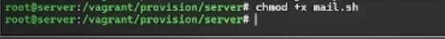
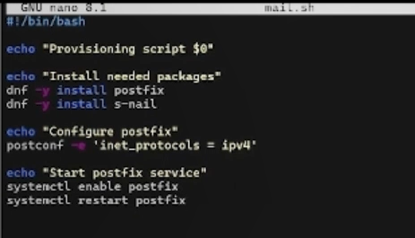
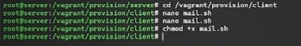
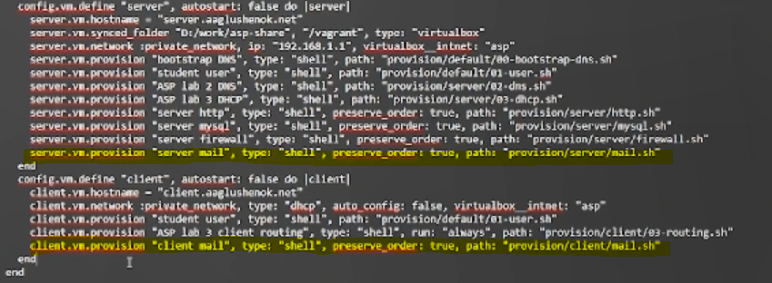
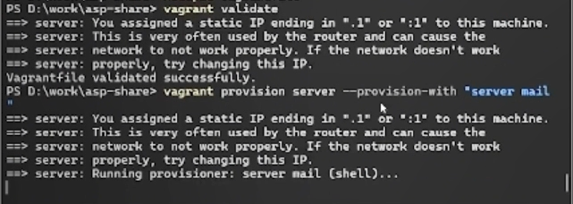
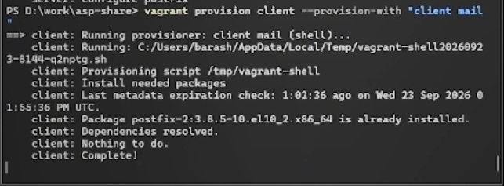
В ходе выполнения лабораторной работы № 8 мне удалось приобрести практические навыки по установке и конфигурированию SMTP-сервера.